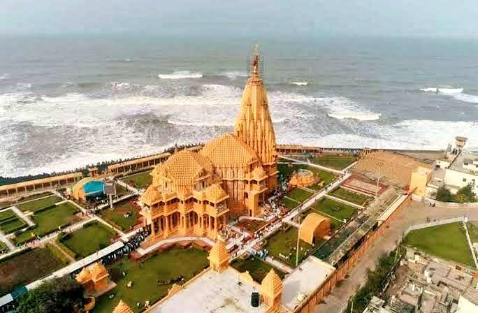
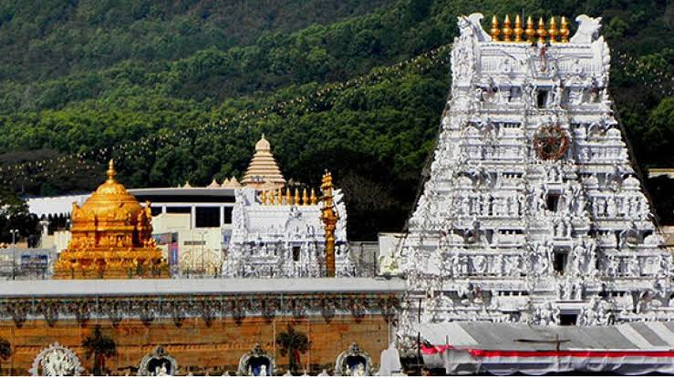
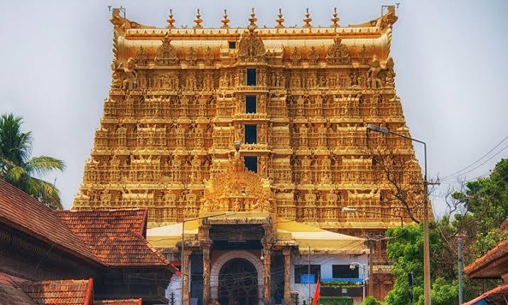
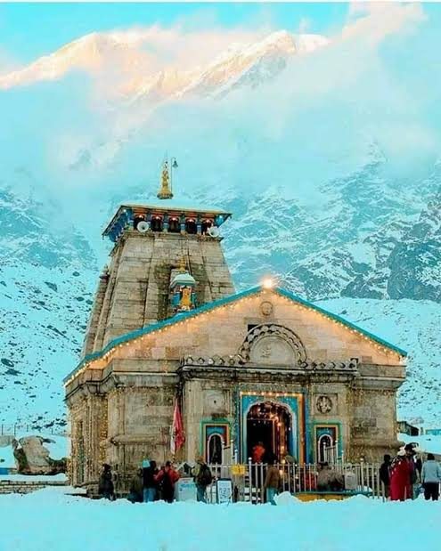
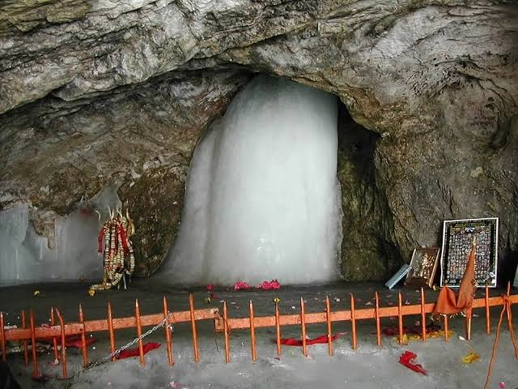
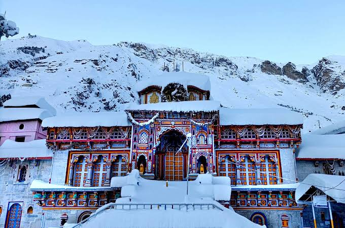
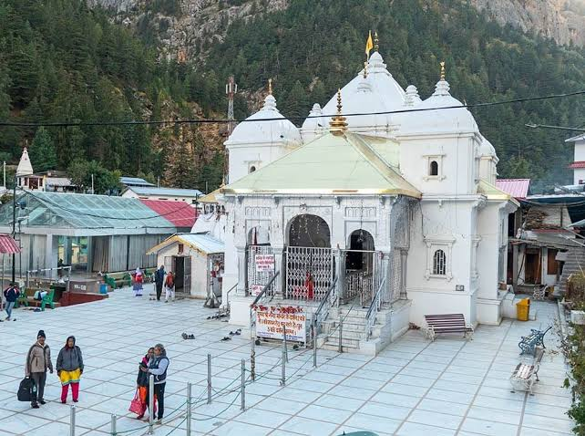

Somnath Temple is one of the most well-known pilgrimage destinations. Ancient literature including the Rigveda, the Shivpuran, and the Shreemad Bhagavat all mention this temple. This temple is situated on Gujarat’s western coast. Shree Somnath Jyotirling Temple is highly revered by followers of Lord Shiva since it is thought to include one of the 12 Jyotirlingas, sacred sites in India thought to be the sites of Lord Shiva’s manifestation.
The name Vishvanatha or VishveshvaraKashi, which refers to Lord Shiva, signifies Ruler of the Universe. One of the most well-known Hindu temples devoted to Lord Shiva is the Vishvanath Temple. One of the 12 Jyotirlinga temples is located here. It is situated in Varanasi, India’s Uttar Pradesh. On the western bank of the revered Ganga is where the temple is located. Numerous Muslim emperors had destroyed this sacred Shiva temple before, most recently Aurangzeb, the sixth Mughal emperor. The Maratha ruler Ahilyabai Holkar of Indore erected the existing building in a nearby location around 1780. Recently Government of Uttar Pradesh along with the Government of India renovate the temple with a new look

Tirupati Balaji Temple also known as Sri Venkateswara Swami Vaari Temple is one of the most famous places for Hindu devotees. In the Indian state of Andhra Pradesh’s Tirupati district, in the hill town of Tirumala, sits the Sri Venkateswara Swami Vaari Temple, is located. The temple is devoted to Venkateswara, a manifestation of Vishnu. As per belief, Lord Vishnu is thought to have come to earth to deliver humanity from the hardships and sufferings of the Kali Yuga.... Read more at: https://www.adda247.com/school/famous-temples-in-india/
As per the belief of Hindu Devotees, the Sree Padmanabhaswamy temple has been around for 5000 years. Sree Padmanabhaswamy Temple is situated in Thiruvananthapuram in the state of Kerala. This temple is one of the 108 Divya Desams.The Padmanabhaswamy Temple is dedicated to Lord Padmanabha, one of the avatars of Lord Vishnu is one of the main locations for Vaishnava devotion according to Vaishnavism’s dharma. There is a reference to the Padmanabhaswamy Temple in The Bhagwad Gita.... Read more at: https://www.adda247.com/school/famous-temples-in-india/
The Kedarnath Temple is located in the town of Kedarnath in the Indian state of Uttarakhand’s Rudraprayag district. Lord Shiva is honoured in this temple. One of the earliest mentions of Kedarnath is found in the Skanda Purana, which identifies Kedara (Kedarnath) as the spot where Lord Shiva discharged the Ganges River’s sacred waters from his matted hair.... Read more at: https://www.adda247.com/school/famous-temples-in-india/
In the Indian state of Jammu and Kashmir’s Anantnag area, there is a Hindu sanctuary known as Amarnath Temple. The Shiva Lingam at the shrine in this temple is a Swayambhu lingam. The cave is located in Lidder Valley and is 3,888 metres above sea level, 168 kilometres from the city of Anantnag. It is mostly covered in snow throughout the year, with the exception of a brief period in the summer when it is open to pilgrims. The cave is surrounded by glaciers and snowy mountains.... Read more at: https://www.adda247.com/school/famous-temples-in-india/
Badrinath Temple is one of the destinations of char Dham jatra as it is a holy place for Hindu devotees. The temple is located in Badrinath town and in Chamoli district in the state of Uttarakhand. The town’s primary draw is the Badrinath temple. A black stone representation of Lord Badrinarayan made of Shaligram stone was allegedly found in the Alaknanda River by Adi Shankaracharya. He first placed it in a cave close to Tapt Kund’s hot springs. [10] [11] The King of Garhwal relocated the murti to the current temple in the sixteenth century.... Read more at: https://www.adda247.com/school/famous-temples-in-india/
Gangotri Dham is a pilgrimage destination for Dham Chota Char Dham. The temple is located in the town named Gangotri in Uttarkashi district in the state of Uttarakhand, India. It is the highest temple in which Goddess Ganga is honoured. The sacred River Ganges, also known as Bhagirathi, rises from the nearby Gangotri glacier. The Gangotri Temple, where Goddess Ganga is revered, is the main draw to Gangotri. The magnificent temple is a 20-foot-tall white granite building.... Read more at: https://www.adda247.com/school/famous-temples-in-india/
